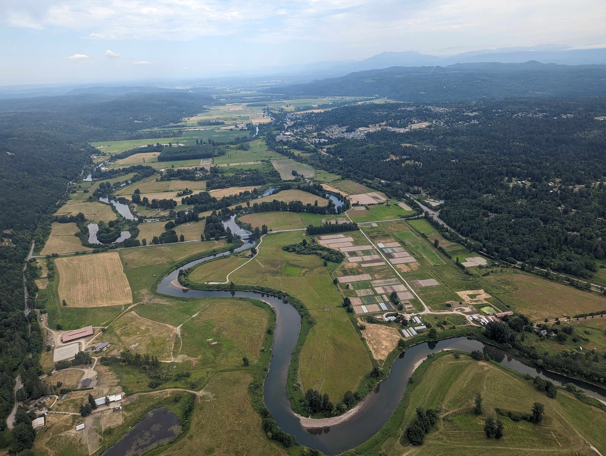

Gazing out of an airplane window gives you a unique perspective on the world. In this case, it's a view of a meandering river! Different aircraft fly at different altitudes, but this small plane was high enough to capture the river's winding path. What is the name of the river in the photograph? (don't include "River" in your answer)
